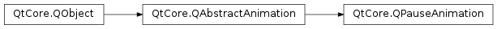

QPauseAnimation¶
Note
This class was introduced in Qt 4.6.
Synopsis¶
Functions¶
- def
setDuration(msecs)
Detailed Description¶
The
PySide2.QtCore.QPauseAnimationclass provides a pause forPySide2.QtCore.QSequentialAnimationGroup.If you wish to introduce a delay between animations in a
PySide2.QtCore.QSequentialAnimationGroup, you can insert aPySide2.QtCore.QPauseAnimation. This class does not animate anything, but does notfinishbefore a specified number of milliseconds have elapsed from when it was started. You specify the duration of the pause in the constructor. It can also be set directly withPySide2.QtCore.QPauseAnimation.setDuration().It is not necessary to construct a
PySide2.QtCore.QPauseAnimationyourself.PySide2.QtCore.QSequentialAnimationGroupprovides the convenience functionsPySide2.QtCore.QSequentialAnimationGroup.addPause()andPySide2.QtCore.QSequentialAnimationGroup.insertPause(). These functions simply take the number of milliseconds the pause should last.
-
class
PySide2.QtCore.QPauseAnimation([parent=nullptr])¶ -
class
PySide2.QtCore.QPauseAnimation(msecs[, parent=nullptr]) Parameters: - msecs –
PySide2.QtCore.int - parent –
PySide2.QtCore.QObject
Constructs a
PySide2.QtCore.QPauseAnimation.parentis passed toPySide2.QtCore.QObject‘s constructor. The default duration is 0.Constructs a
PySide2.QtCore.QPauseAnimation.msecsis the duration of the pause.parentis passed toPySide2.QtCore.QObject‘s constructor.- msecs –
-
PySide2.QtCore.QPauseAnimation.setDuration(msecs)¶ Parameters: msecs – PySide2.QtCore.intSee also
PySide2.QtCore.QPauseAnimation.duration()
© 2018 The Qt Company Ltd. Documentation contributions included herein are the copyrights of their respective owners. The documentation provided herein is licensed under the terms of the GNU Free Documentation License version 1.3 as published by the Free Software Foundation. Qt and respective logos are trademarks of The Qt Company Ltd. in Finland and/or other countries worldwide. All other trademarks are property of their respective owners.